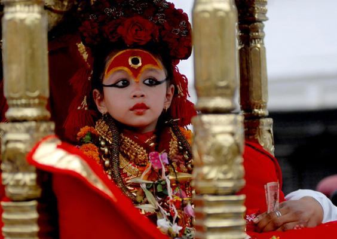

Welcome to the Capital City of Nepal
Kathmandu is the capital and largest city of Nepal, with a population of around 1 million. It is located in the Kathmandu Valley, which also contains two other cities, Patan and Bhaktapur. The city is known for its temples, palaces, and historic sites, as well as its vibrant culture and arts scene. Kathmandu is also a popular destination for trekkers and mountaineers, as it is the gateway to the Himalayas.
The Kathmandu Valley has been inhabited for at least 2000 years. The city's name comes from the ancient Kasthamandap temple, which means "wooden pavilion". The city is renowned for its Newar architecture, which includes intricately carved wooden windows and doors, multi-tiered pagodas, and brick buildings. This style is prevalent in many of its historic buildings and temples.

The Kumari, also known as the Living Goddess, is a young prepubescent girl who is worshipped in Kathmandu as the physical embodiment of the divine female energy, or Devi. This tradition is particularly prominent in the Newar community of the Kathmandu Valley. People, including the king in historical times, seek her blessings. Her mere presence is thought to bring good fortune and protection. The Kumari's divine status ends with her first menstruation or any significant loss of blood. She then returns to normal life and is replaced by a new Kumari. Post-Kumari life can be challenging, as she transitions from being worshipped to living an ordinary life. Efforts are made to support her education and integration back into society.
